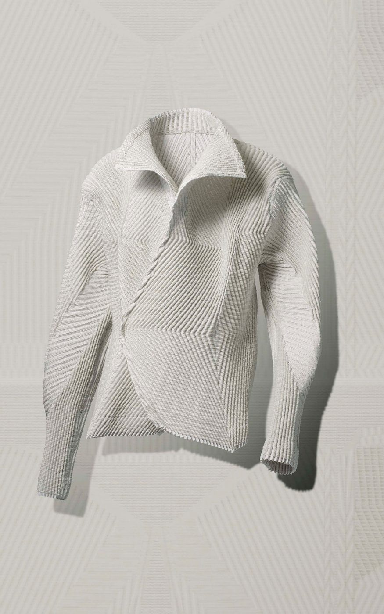
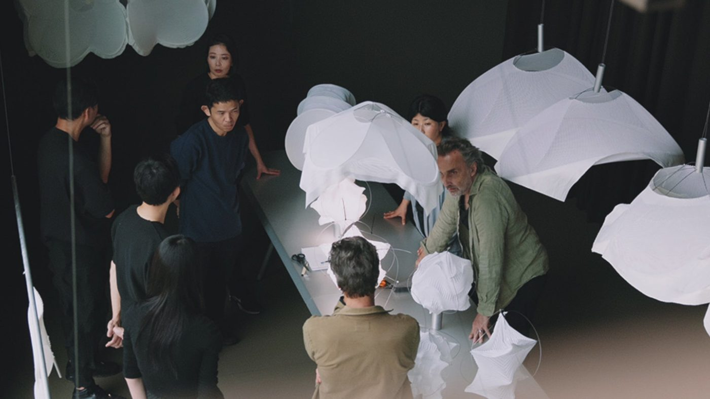
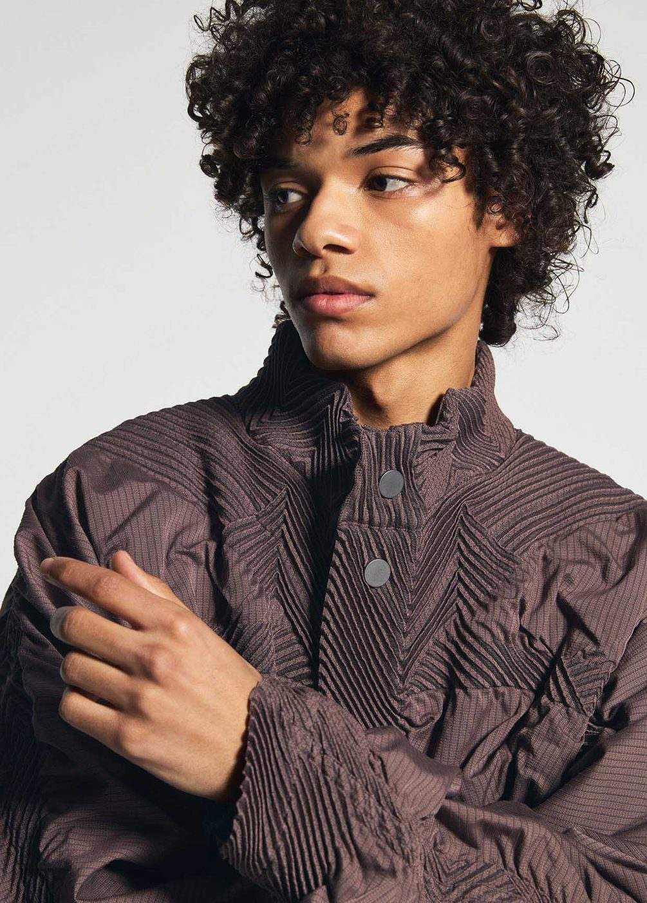
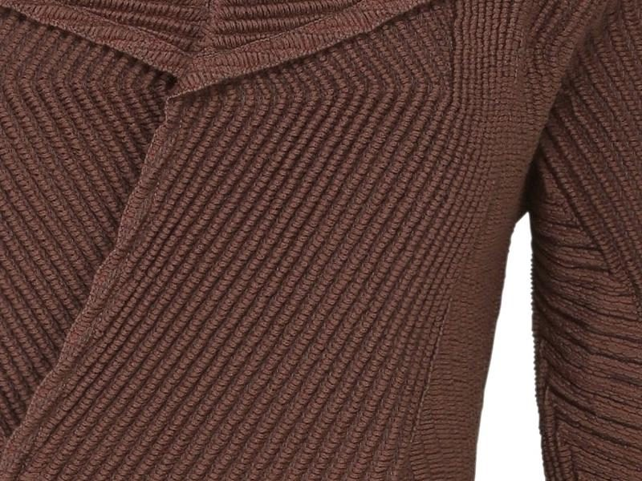
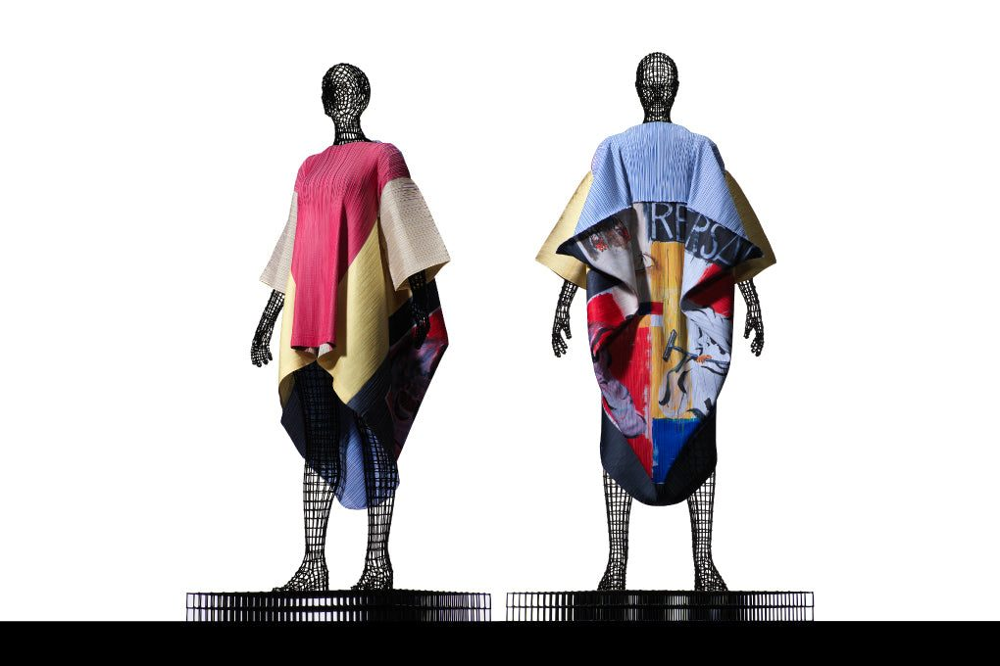
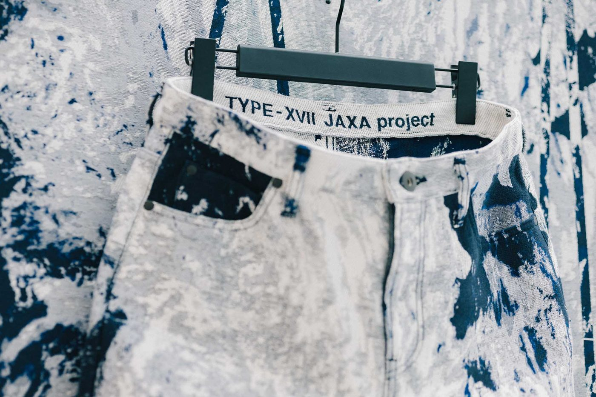

Company study · 2026-11-16
A-POC ABLE Issey Miyake
Visual study (mood board) of A-POC ABLE Issey Miyake, the engineering-led Issey Miyake label built on one piece of cloth: design and style from its website and campaign images.
Mood
Cloth first, garment second. Heat-set relief and chevron geometry in chalk, cocoa and ink, shot on quiet gray or cut-paper grounds. A white-lit workroom table shows making as part of the story. Positioning: engineered cloth the wearer takes part in.
 (01)
(01)

(02)

(03)

(04)

(05)

(06)

(07)Palette, measured from the images
#E1E1DF#C9BFA2#9FA0A3#807C74#513733#1C1D1FVisual themes
01 One piece of cloth. Key motifs: pleated cardigans and jackets floating on a paper or woven ground, pattern-shape cut-outs. Sub motifs: the cloth echoed in tone on the backdrop, the garment shadow.
02 Heat-set relief. Key motifs: chevron and diagonal pleat bands, panels that change direction at collar, sleeve and hem. Sub motifs: snap collars, bound ribbed cuffs, sawtooth hems.
03 The making room. Key motifs: a team around a table, white fabric lamp-forms, wire frames, scissors. Sub motifs: low dark-room light, hands at work.
04 Artist and engineer projects. Key motifs: Tadanori Yokoo artwork panels on capes and bomber backs, wire-mesh figures, a JAXA project jacquard in indigo and white. Sub motifs: color-block pleats, labels naming the project.
Hero material
The brand text says A-POC began in 1998 as a change to the process of making clothes, with the wearer taking part, and that an engineering team led by Yoshiyuki Miyamae now develops it.
The look is a heat-set, ridged cloth whose pleat direction changes by panel, in one flat color per piece, so the cloth reads as relief rather than print. Close-up at (05).
Visual elements
Photography. Garments hung flat on a tone-on-tone ground, light from one side with a soft shadow; models on a gray studio sweep, tight head-and-shoulder crop; white ground with wire mannequins for project pieces.
Type and graphics. Helvetica-style sans in the site CSS (HelveticaLTPro), black on white, Japanese by default; a dot-matrix style wordmark for the Yokoo project.
Layout habits. Full-width image banners, numbered look pages (Look 34, Look 41) with garment tiles beneath, square archive images for dialogues, ample white space.
Detail. Pleat relief, chevron joins, snap closures in matt gray metal, ribbed cuffs, sawtooth hems, woven pattern repeats.
Interface colors (site CSS, separate from product colors). the most used values are white #fff (41 uses), dark text #333 (39), light gray #eceeef (17), mid gray #767676 (17), then #c5c5c5, #aaa and black #000. The interface is neutral so the images carry all color.
Visual story
hero banner of the current collection, a Look 34 and Look 41 teaser, the craft banner with the workroom, then dialogues and project pages. Look pages show each garment on a model, then tiles. the story runs from cloth to making to wearer. Relation to the themes: a strong T10 fit (material-led, one-piece cloth), since the cloth is the subject and the garment follows from it. For T9 it is a partial fit: it shows process and wearer participation but not wear; the surfaces are fresh and engineered.
Notable products
Pleated chevron jacket and wrap jacket (Looks 34, 38). Carry the heat-set relief in one color.
Cream pleated button cardigan. Shows the cloth as the print, hung over its own cut pattern.
Yokoo project cape and bomber. Show artwork panels set into pleated and woven cloth.
JAXA project jeans. Show a woven pattern cloth in a basic five-pocket shape.
Method and limits
Palette basis. eight A-POC ABLE images: the cream cardigan banner, the white jacket, the workroom table, the Look 38 and Look 34 model images, the brown wrap jacket, and the JAXA jeans (board images (01), (02), (03), (04), (05) and (07) plus two more look images); k-means in Lab, six clusters kept. The Yokoo cape image (06) was not measured. Chalk white is partly the page ground and the studio sweep
Limits. Pages read on 2026-11-16 (8, all by plain HTTP fetch, no login): https://www.isseymiyake.com/en/pages/apocable (brand home); /en/blogs/apocable-concept; /en/blogs/apocable-looks; /en/blogs/apocable-looks/at34-26aw; /en/blogs/apocable-looks/at41-26aw; /en/collections/apocable; /en/pages/apocable-projects (Tadanori Yokoo Issey Miyake); /en/blogs/apocable-dialogues. The Dialogues and the Yokoo pages were read for imagery and titles only; their article text was not in the plain fetch. Product-line color analysis was not done. The 2026 collection images are the AW26 campaign. Candidates for a later deeper look only (not started): the heat-set pleated cloth and the JAXA jacquard cloth. A material specialist and reverse engineering are candidates only.
Image credits
- (01) Cream pleated button cardigan floating over cut pattern-shape paper, wide banner. source (brand page, preview image 0d0e71066e4e45948761e1f5b77f1539, 1920 px)
- (02) White collared jacket with chevron relief, hanging against a tone-on-tone woven ground. source (brand page, AT_top_2026sep25 image, 1920 x 3072 px)
- (03) Team around a long worktable of white fabric lamp-forms in a dark room, from above. source (brand page, preview image f59abeadd83042e2bddaee6f49246905, 1920 px)
- (04) Model in a cocoa-brown snap-neck top with chevron pleat relief, gray studio, Look 38. source (image AT_look_2026oct26_05_38, 1240 x 1728 px)
- (05) Close-up of the chevron-pleated cloth on a brown wrap jacket, true color (crop of a 1920 x 2688 px image). source (image AT63FD209-m-03)
- (06) Two pleated capes in color blocks with artwork panels, on wire-mesh figures, Tadanori Yokoo project. source (image AT_sp_2023aug30_02, 1020 x 680 px)
- (07) Indigo-and-white patterned jeans on a hanger against matching cloth, JAXA project label. source (image AT_dialog_2026oct21_01, 2160 x 1440 px)
Images are the brand's own, shown for study only; each is listed above with its source page.